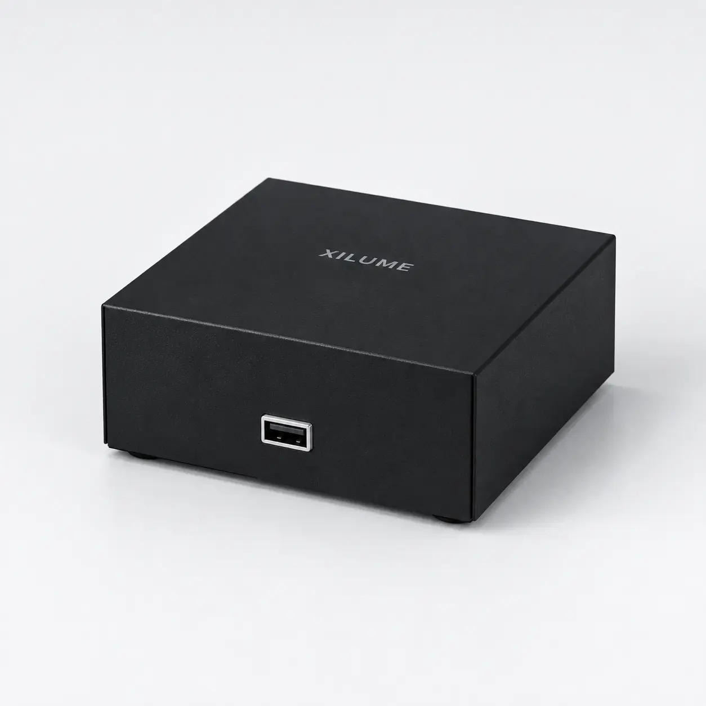
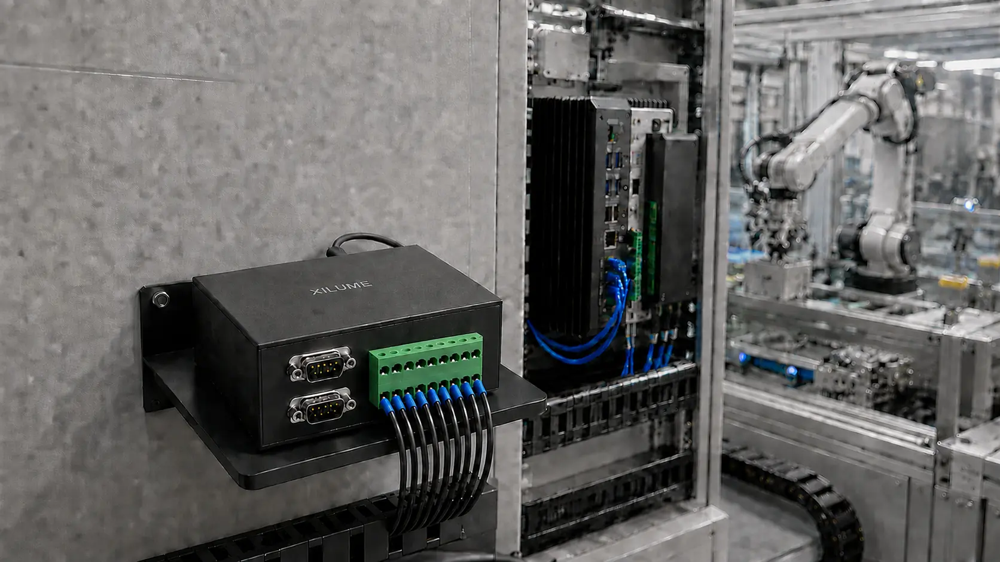

WINDOWSProduct driver
Supported
Xilume 8Hub
Eight interfaces.
One USB.
CAN FD and serial equipment, organized behind one compact hub.
2 × CAN FDUp to 8 Mbps
4 × RS-485Industrial serial
2 × RS-232Service equipment
Windows + LinuxDriver support

One connection point
The quiet center of a mixed-bus system.
Interfaces
Every channel,
where you expect it.


CAN 1 + CAN 2
Two independent CAN FD channels
Classic CAN and CAN FD, with data rates up to 8 Mbps.
2 × DE9Independent channels
Applications
One hub. Different rooms.
COMMISSIONING + TEST
Keep every device on the bench connected.
One repeatable interface for controllers, instruments, and service links.

AUTOMATION + ROBOTICS
Bring field networks back to one host.
Connect machine control, sensors, and diagnostics without a row of adapters.
Software support
Eight channels.
Ready on your host.
LINUXNative host access
Supported
- Host
- USB 2.0 Full-Speed
- CAN
- 2 independent CAN / CAN FD channels
- Maximum data bitrate
- 8 Mbps CAN FD data phase
- Standard serial configuration
- 4 × RS-485 + 2 × RS-232
- RS-485 configuration
- 6 × RS-485
- Field connectors
- 2 × DE9 + 2×9 / 3.5 mm Phoenix terminal
- Operating systems
- Windows + Linux
- Enclosure
- Black 1.2 mm sheet metal · approx. 100 × 96 × 40 mm
Product support